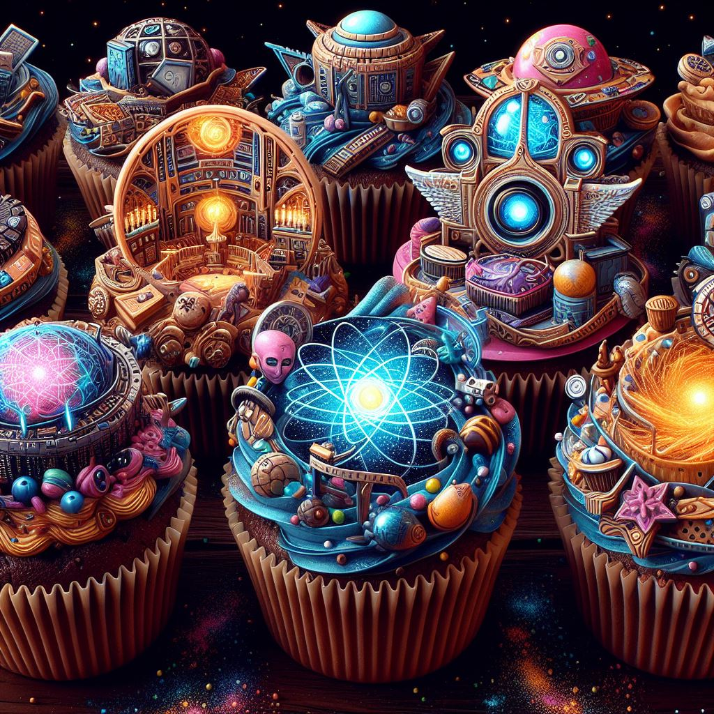

Multiverse Muffins

Multiverse Muffins: A sweet snack that can give you a glimpse of other possible worlds with every bite.
Ingredients
- 2 cups of all-purpose flour
- 2 teaspoons of baking powder
- 1/2 teaspoon of salt
- 1/2 cup of sugar
- 1/4 cup of vegetable oil
- 1 egg
- 3/4 cup of milk
- 1 teaspoon of vanilla extract
- 1/4 cup of multiverse crystals (available at your nearest interdimensional market)
- Preheat oven to 444°F and line a 12-cup muffin tin with paper liners.
- In a large bowl, whisk the flour, baking powder, salt, and sugar.
- In another bowl, whisk the oil, egg, milk, vanilla, and multiverse crystals.
- Add the wet ingredients to the dry ingredients and stir until just combined. Do not overmix.
- Spoon the batter into the prepared muffin tin, filling each cup about 2/3 full.
- Bake for 15 to 20 minutes or until a toothpick inserted in the center comes out clean.
Let them cool slightly before serving and enjoy your multiverse exploration!